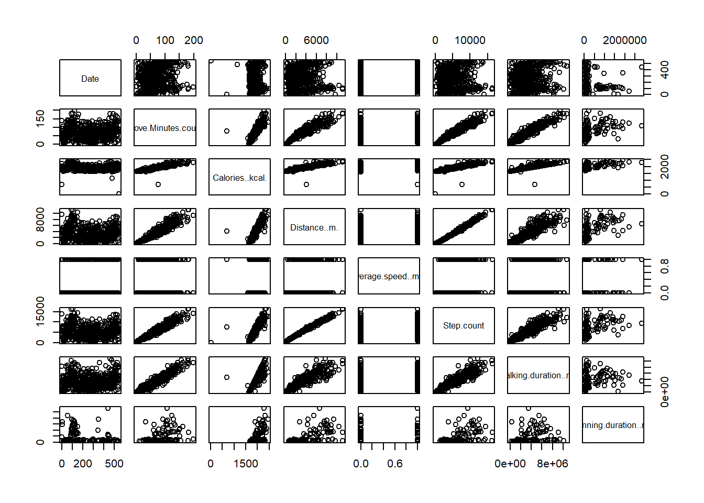

![]()
library("psych")
library("dplyr")
library("plotly")Introduction to the series: “Visualisation of My Personal Google Data”
If you give permission to Google to store your location data, they will keep them in their databases forever. You can also allow them to store it for a while and then ask them delete it. They will directly do so.
What makes this study a fun project is its being very personal. I decided to analyze my personal data in August, 2022. Therefore, I granted many new permissions to Google along with many previously granted permissions. They keep them in various formats including .csv, .json, .mbox etc. When you query for your personal data, they provide it within a couple of days depending on the size of the data you queried.
Usually, I provide the readers with the data in my posts. However, in this series, the data are very personal and so I will not.
Introduction: “My exercise routine”
In this part of the series, we will investigate my personal location data. We will visualize the spots I visited within a period of time. This way, I personally will gain insights about how boring my days are :)
The R packages that we use in this post are as follows:
Understand the Data & Pre-processing
daily_metrics<-read.csv("Daily activity metrics.csv",sep=",", header = TRUE)
daily_metrics <- daily_metrics%>% mutate_if(is.numeric, round, digits=0)
daily_metrics <- subset(daily_metrics, select = -c(5,6,8,9,14, 13,12,11) )
plot(daily_metrics)
#sadece running olan günlere ait veri:
data_for_plotting<-daily_metrics[!is.na(daily_metrics$Running.duration..ms.),]fig<-plotly::plot_ly(data=data_for_plotting, type ="scatter", mode="lines+markers",
y=data_for_plotting$Step.count, x=~Date)
figData Visualization
########################
# walking VS runing duration bars
#########################
ay<- list(
tickfont =list(color ="red"),
overlaying = "y",
side= "right",
title= "<b> secondary</b> y axis"
)
fig<-plotly::plot_ly()
fig<- fig %>%
add_trace(type ="bar",
y =data_for_plotting$Walking.duration..ms.,
x=data_for_plotting$Date,
name="walking duration (ms)"
)
fig<- fig %>% add_trace (type ="scatter", mode="lines+markers" , #yaxis="y2",
y=data_for_plotting$Running.duration..ms.,
x=data_for_plotting$Date ,
name="running duration (ms)")
fig <- fig %>% layout(
title="two axis",
yaxis2 = ay,
xaxis = list( title= "x axis title"),
yaxis = list( title= "<b> primary</b> y axis")
)
fig########################
# Minutes of movement VS distance in meters
#########################
ay<- list(
tickfont =list(color ="red"),
overlaying = "y",
side= "right",
title= "<b> Distance I walked in meters </b>"
)
fig<-plotly::plot_ly()
fig<- fig %>%
add_trace(y =data_for_plotting$Move.Minutes.count,
x=data_for_plotting$Date,
name="movemnt(min.)",
type ="bar" )
fig<- fig %>% add_trace (y=data_for_plotting$Distance..m.,
x=data_for_plotting$Date ,
name="distance(m.)", yaxis="y2",
type ="scatter", mode="lines+markers")
fig <- fig %>% layout(
title="My movement VS distance <b>in 2022</b>",
yaxis2 = ay,
xaxis = list( title= "<b>Days</b>"),
yaxis = list( title= "<b> Time I moved in minutes </b> ")
)
fig########################
# steps VS distance VS calories
#########################
fig<-plotly::plot_ly()
fig<- fig %>%
add_trace(y =data_for_plotting$Step.count,
x=data_for_plotting$Date,
name="Steps ",
type ="scatter", mode="lines")
fig<- fig %>% add_trace (y=data_for_plotting$Distance..m.,
x=data_for_plotting$Date ,
name="distance",
type ="bar" )
fig<- fig %>% add_trace (y=data_for_plotting$Calories..kcal.,
x=data_for_plotting$Date ,
name="calories",
type ="scatter", mode="lines")
fig <- fig %>% layout(
title=" <b>My movement in 2022</b>",
xaxis = list( title= "<b>Days</b>"),
yaxis = list( title= "<b> steps(n)</b> / <b> distance(m)</b> / <b> calories(kcal) </b> ")
)
fig